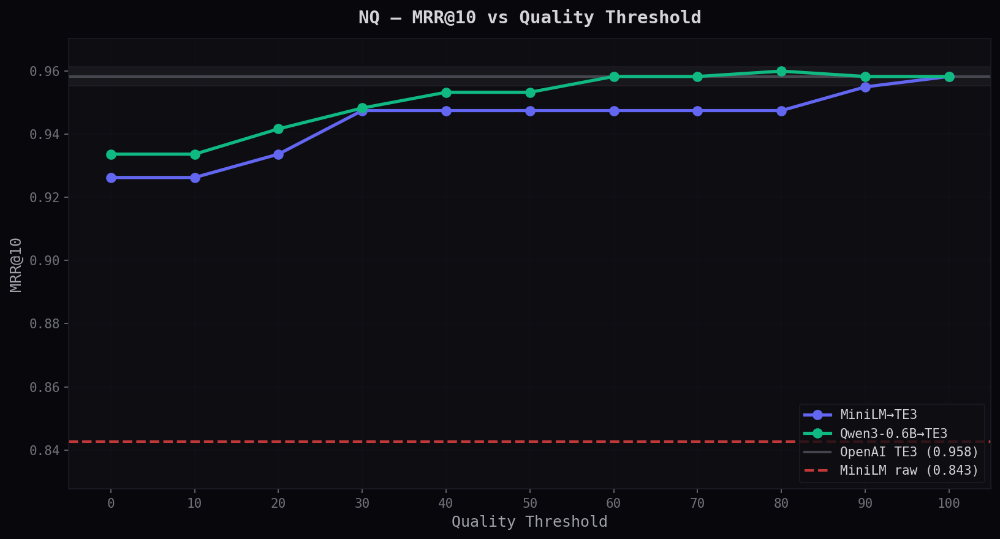
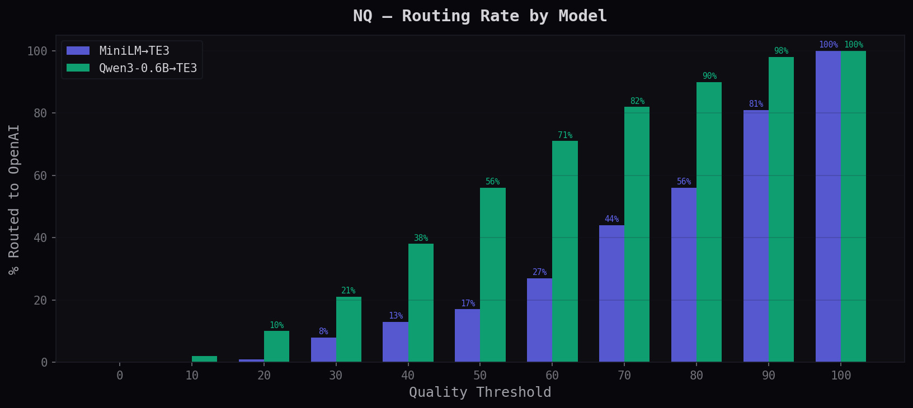
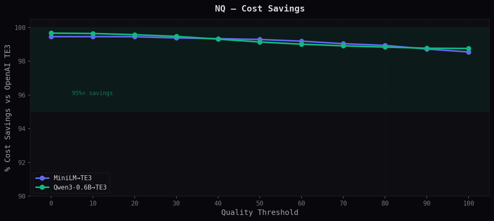
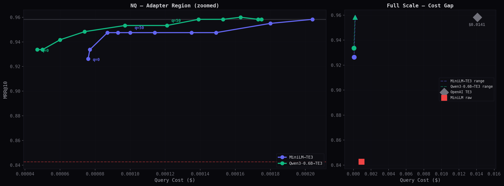
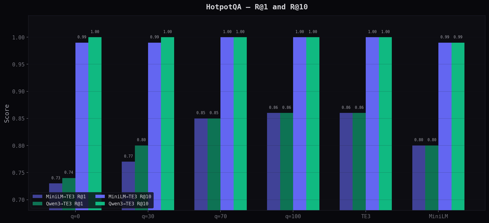
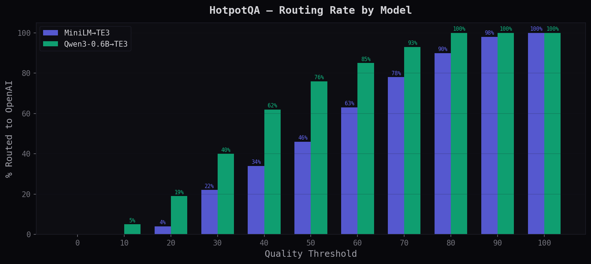
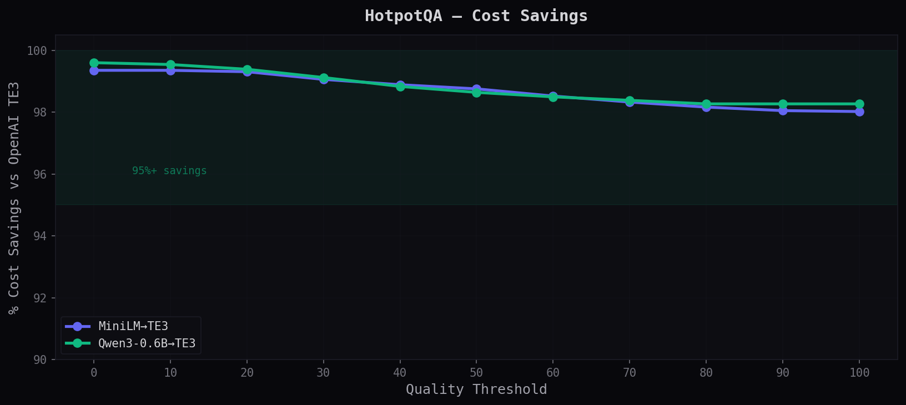
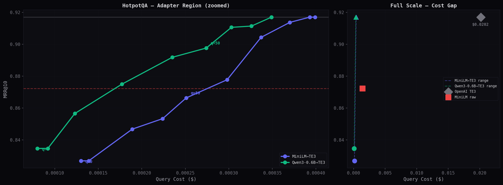
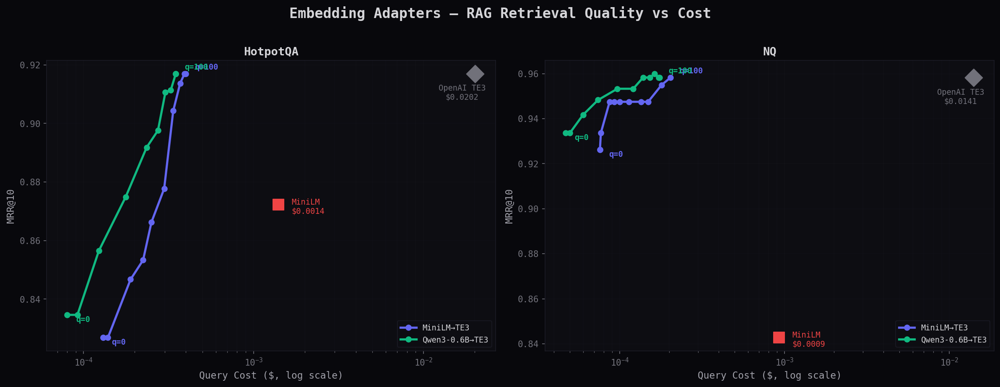

Benchmark Results
Adapted models evaluated on real RAG retrieval against OpenAI TE3.
zero API calls
vs provider direct
local GPU
single GPU
Overview
We benchmark adapters on standard retrieval datasets — Natural Questions (factoid Q&A) and HotpotQA (multi-hop reasoning). Adapted queries search a corpus embedded with OpenAI text-embedding-3-large — simulating a real production RAG setup where your index was built with a commercial provider.
The core finding: Adapters produce embeddings that retrieve nearly as well as the original provider — at a fraction of the cost and latency. On Natural Questions, Qwen3-0.6B→TE3 achieves MRR@10 of 0.934 at quality=0 (zero provider calls) vs OpenAI's 0.960. That's 97% of the quality at 0.3% of the cost.
Where adapters excel: On well-formed factual queries (NQ), adapters beat the raw MiniLM baseline at quality=0 — meaning the adapter actually improves retrieval over using MiniLM alone. On harder multi-hop queries (HotpotQA), the adapters start lower but the quality routing dial smoothly closes the gap.
Qwen3 vs MiniLM: Qwen3-0.6B→TE3 consistently scores 1–3% higher MRR than MiniLM→TE3, and reaches provider parity at much lower quality thresholds. The tradeoff is speed — MiniLM runs at 18K tok/s vs Qwen3's 1.2K tok/s. Choose MiniLM for throughput, Qwen3 for accuracy.
Understanding Quality Calibration
The quality parameter is a threshold from 0 to 100. Every text gets a confidence score from the adapter's neural quality head. Texts scoring below the threshold get re-embedded by the original provider.
/v1/quality/calibrate) analyzes your actual data and recommends the right setting — so you never risk degraded performance below your source model.
| Setting | What happens | Best for |
|---|---|---|
| quality=0 | Everything runs locally. Zero provider calls. Maximum speed, minimum cost. | High-throughput indexing, air-gapped systems, cost-sensitive apps |
| quality=30 | ~8–21% of queries route to provider. Quality improves noticeably on hard queries. | General-purpose search with cost control |
| quality=50 | ~17–56% routed. Significant quality improvement, still massive cost savings (99%+). | Balanced cost/quality for production RAG |
| quality=70 | ~44–82% routed. Near-provider quality on most datasets. | Quality-critical applications |
| quality=100 | Everything goes to the provider. Equivalent to calling OpenAI directly (but cheaper). | Maximum quality, cost still lower than direct |
POST /v1/quality/calibrate with a sample of your actual data. The endpoint returns your quality grade (excellent/good/moderate/poor), the score distribution, and a routing preview at every threshold. It specifically tells you the lowest quality level where you won't degrade below your source model — so you get the maximum cost savings without any retrieval risk.
Natural Questions
100 queries × 1,000 passages — factoid Q&A from Google search

MRR@10 vs Quality Threshold
Adapters beat MiniLM raw (red dashed, 0.843) at quality=0 with zero provider calls. The curves show how MRR improves as you route more queries to OpenAI. Qwen3 reaches the TE3 line at q=40; MiniLM at q=90.

R@1 and R@10 at Key Thresholds
R@10 (is the answer in the top 10?) stays above 0.97 for adapters even at q=0 — nearly matching OpenAI's 0.98. R@1 (exact top hit) climbs from 0.90/0.91 at q=0 to 0.94 at q=100.

% Routed to Provider
Shows what fraction of queries the quality head sends to OpenAI at each threshold. At q=30, MiniLM routes just 8% while Qwen3 routes 21% — Qwen3's quality head is stricter but achieves higher accuracy at each level.

Cost Savings vs OpenAI Direct
Savings stay above 98% at every quality level. Even at q=100 (everything routed), it's still cheaper than calling OpenAI directly because of our lower per-token rate.

Cost vs Accuracy Tradeoff
Left panel zooms into the adapter cost range ($0.00005–0.0002). Right panel shows the full scale — adapters are a tiny dot at the left, OpenAI is the diamond at $0.014. The 78× cost gap is visible at a glance.
| q | MiniLM→TE3 | Qwen3-0.6B→TE3 | ||||||
|---|---|---|---|---|---|---|---|---|
| %OAI | MRR@10 | R@1 | Cost | %OAI | MRR@10 | R@1 | Cost | |
| 0 | 0% | 0.926 | 0.900 | $0.000076 | 0% | 0.934 | 0.910 | $0.000047 |
| 10 | 0% | 0.926 | 0.900 | $0.000076 | 2% | 0.934 | 0.910 | $0.000050 |
| 20 | 1% | 0.934 | 0.910 | $0.000077 | 10% | 0.942 | 0.920 | $0.000060 |
| 30 | 8% | 0.948 | 0.930 | $0.000087 | 21% | 0.948 | 0.930 | $0.000074 |
| 40 | 13% | 0.948 | 0.930 | $0.000093 | 38% | 0.953 | 0.930 | $0.000097 |
| 50 | 17% | 0.948 | 0.930 | $0.000100 | 56% | 0.953 | 0.930 | $0.000121 |
| 60 | 27% | 0.948 | 0.930 | $0.000114 | 71% | 0.958 | 0.940 | $0.000139 |
| 70 | 44% | 0.948 | 0.930 | $0.000135 | 82% | 0.958 | 0.940 | $0.000153 |
| 80 | 56% | 0.948 | 0.930 | $0.000149 | 90% | 0.958 | 0.940 | $0.000163 |
| 90 | 81% | 0.955 | 0.930 | $0.000180 | 98% | 0.960 | 0.940 | $0.000173 |
| 100 | 100% | 0.960 | 0.940 | $0.000204 | 100% | 0.960 | 0.940 | $0.000175 |
| MiniLM raw | MRR=0.843 · R@1=0.810 · R@10=0.940 · $0.000930 | |||||||
| OpenAI TE3 | MRR=0.960 · R@1=0.940 · R@10=0.980 · $0.014080 | |||||||
HotpotQA
100 multi-hop queries × 1,190 passages — requires reasoning across multiple documents

MRR@10 vs Quality Threshold
A harder test. Adapters start below MiniLM raw at q=0 — multi-hop queries challenge the adapter's translation fidelity. But quality routing fixes this: Qwen3 crosses the MiniLM line at q=30 and reaches TE3 at q=60.

R@1 and R@10 at Key Thresholds
Qwen3 achieves perfect R@10 (1.000) at every quality level — the correct answer is always in the top 10. R@1 climbs from 0.74 at q=0 to 0.86 at q=100, matching TE3.

% Routed to Provider
The quality head routes more aggressively here — it correctly identifies that multi-hop queries are harder and sends more to OpenAI. This is the intended behavior: adaptive routing based on query difficulty.

Cost Savings
Even with more routing on this harder dataset, savings stay above 98% at every level. The quality head is efficient — it routes the minimum necessary to maintain accuracy.

Cost vs Accuracy Tradeoff
The quality curve shows smooth, predictable improvement. Each step up in quality threshold buys a measurable MRR improvement at a known cost — no surprises.
| q | MiniLM→TE3 | Qwen3-0.6B→TE3 | ||||||
|---|---|---|---|---|---|---|---|---|
| %OAI | MRR@10 | R@1 | Cost | %OAI | MRR@10 | R@1 | Cost | |
| 0 | 0% | 0.827 | 0.730 | $0.000130 | 0% | 0.835 | 0.740 | $0.000080 |
| 20 | 4% | 0.827 | 0.730 | $0.000139 | 19% | 0.857 | 0.770 | $0.000123 |
| 30 | 22% | 0.847 | 0.770 | $0.000189 | 40% | 0.875 | 0.800 | $0.000177 |
| 50 | 46% | 0.866 | 0.800 | $0.000251 | 76% | 0.898 | 0.840 | $0.000274 |
| 60 | 63% | 0.878 | 0.810 | $0.000298 | 85% | 0.911 | 0.850 | $0.000303 |
| 70 | 78% | 0.904 | 0.850 | $0.000337 | 93% | 0.911 | 0.850 | $0.000326 |
| 80 | 90% | 0.914 | 0.860 | $0.000370 | 100% | 0.917 | 0.860 | $0.000349 |
| 100 | 100% | 0.917 | 0.860 | $0.000399 | 100% | 0.917 | 0.860 | $0.000349 |
| MiniLM raw | MRR=0.872 · R@1=0.800 · R@10=0.990 | |||||||
| OpenAI TE3 | MRR=0.917 · R@1=0.860 · R@10=1.000 · $0.020179 | |||||||
Key Thresholds
The quality level where each adapter hits important milestones.
| Milestone | Dataset | MiniLM→TE3 | Qwen3-0.6B→TE3 | What it means |
|---|---|---|---|---|
| Beats source model | NQ | q=0 (0%) | q=0 (0%) | Adapter improves over raw MiniLM with zero routing |
| Beats source model | HotpotQA | q=60 (63%) | q=30 (40%) | Harder dataset needs some routing to beat source |
| Matches TE3 (±1%) | NQ | q=90 (81%) | q=40 (38%) | Qwen3 hits parity with 62% of queries still local |
| Matches TE3 (±1%) | HotpotQA | q=80 (90%) | q=60 (85%) | Adapters reach parity at 98%+ savings |
The Full Picture — Cost vs Quality
Both datasets, log-scale cost axis. Adapters clustered at the left, OpenAI isolated at 50–78× the price.

Methodology
Setup: Corpus documents are embedded once with OpenAI text-embedding-3-large (3072 dimensions). Queries are embedded with each adapter at every quality threshold (0–100 in steps of 10). Retrieval uses cosine similarity.
Metrics: MRR@10 (mean reciprocal rank in top 10), R@k (recall at k — is the gold answer in the top k results?). Cost is the actual API cost for embedding queries only (corpus cost is one-time and excluded).
Datasets: Natural Questions (Google search factoid Q&A, 100 queries, 1,000 passages) and HotpotQA (multi-hop reasoning, 100 queries, 1,190 passages from Wikipedia).
Hardware: Latency and throughput benchmarks run on an NVIDIA RTX 3060 Laptop GPU (6GB VRAM). API response times measured via FastAPI on localhost.
Reproducibility: All benchmarks use fixed random seeds. The evaluation script is available on request.
Ready to see how your data performs?